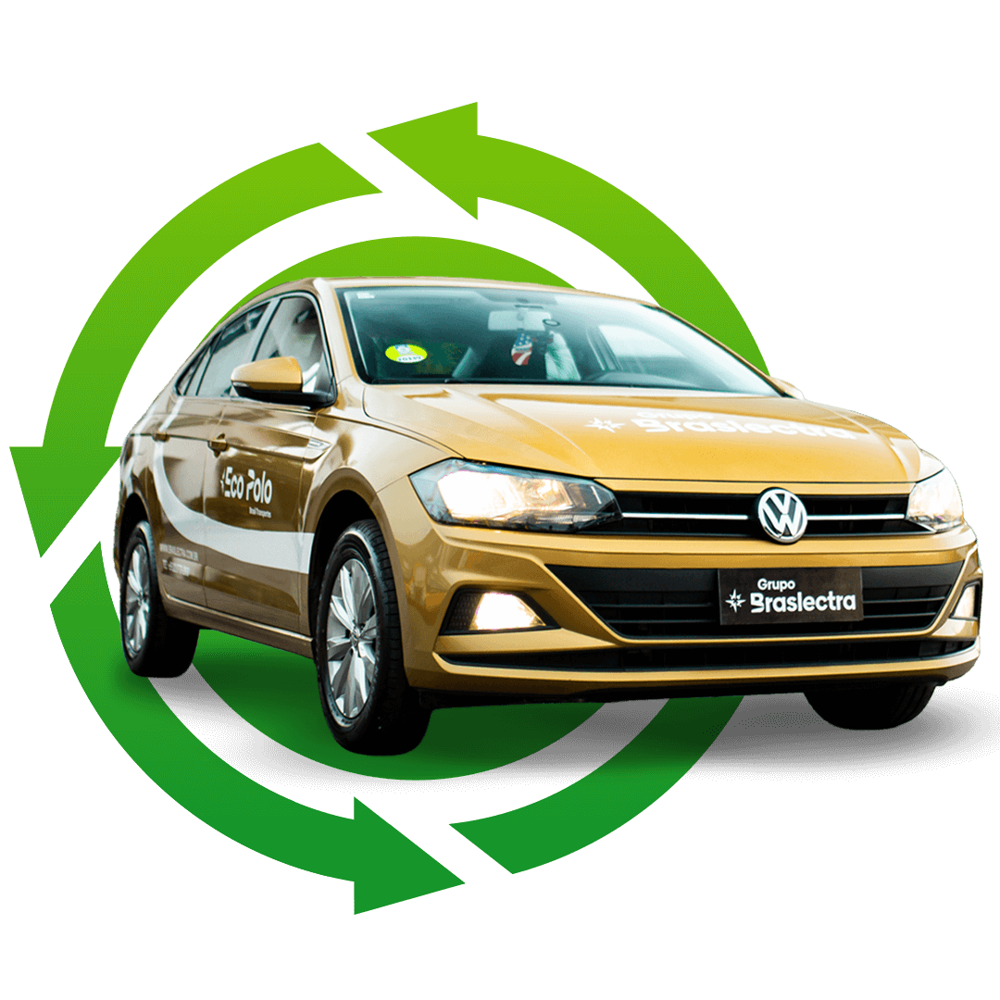
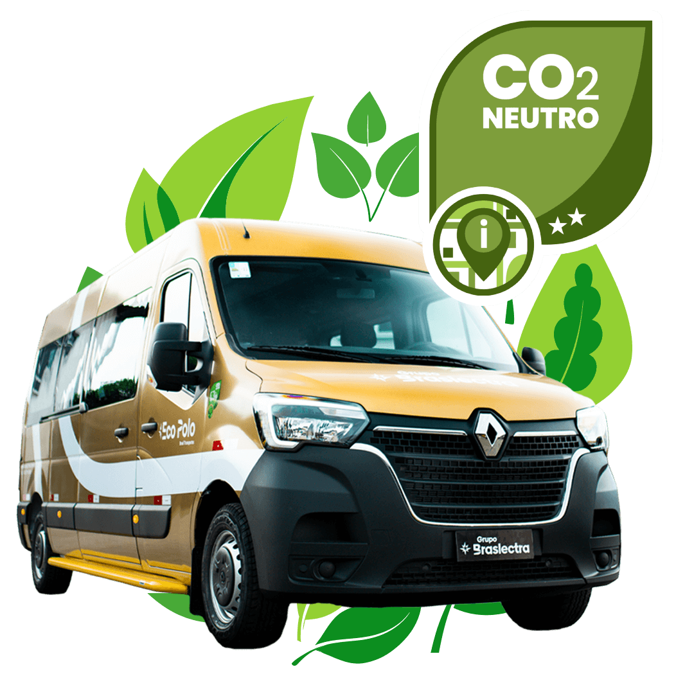
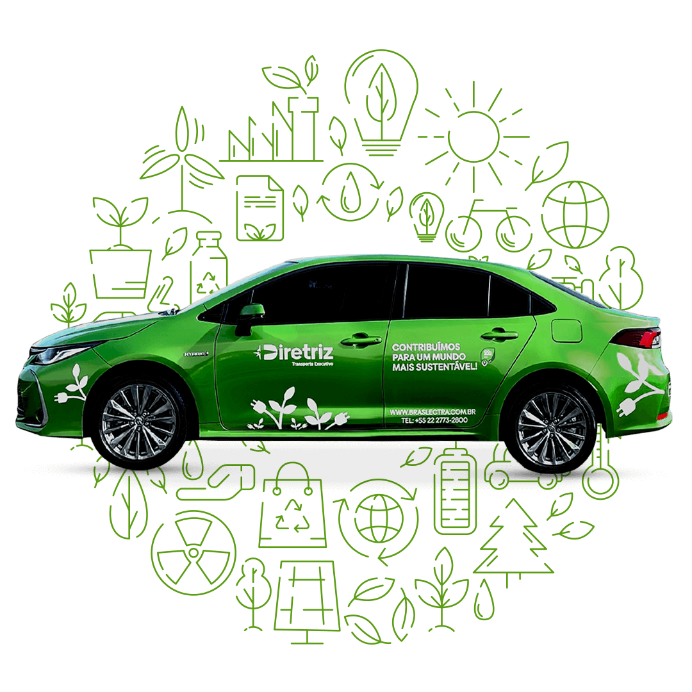

Mobilidade inteligente, responsabilidade ambiental e operação preparada para o futuro
A mobilidade corporativa gera impactos inevitáveis. A diferença está em como cada empresa lida com eles.
Na Braslectra, sustentabilidade não é discurso — é processo, tecnologia e compromisso mensurável. Nossa operação foi estruturada para reduzir, compensar e evoluir continuamente a pegada ambiental do transporte corporativo, sem abrir mão de eficiência, segurança e previsibilidade.
Nesta página, você conhece os pilares que sustentam uma operação alinhada aos critérios ESG, às exigências das grandes empresas e às novas demandas do mercado.

Conformidade com critérios ambientais, sociais e de governança
Soluções inteligentes e responsáveis para o transporte corporativo
Tecnologia e inovação para uma operação preparada

CO₂ Neutro
Frota com compensação certificada por projetos ambientais reconhecidos
Toda operação de transporte corporativo envolve deslocamentos diários e, consequentemente, emissões de CO₂. O diferencial está na gestão responsável dessas emissões.
A Braslectra participa de um programa de compensação de carbono, que mede, em períodos determinados, o volume total de CO₂ emitido pela frota operacional. Esse volume é convertido em créditos de carbono, destinados a projetos ambientais certificados e reconhecidos.
Os créditos financiam iniciativas como:
- Plantio de sementes nativas
- Reflorestamento e regeneração de áreas degradadas
- Projetos ambientais distribuídos em diferentes regiões do Brasil
O resultado é uma operação com impacto ambiental líquido reduzido, permitindo que sua empresa mantenha a logística funcionando enquanto avança de forma concreta em seus compromissos ambientais.
Um pilar essencial para empresas que buscam conformidade com políticas ESG e parceiros ambientalmente responsáveis.
Frota Híbrida Corolla
Eficiência energética com redução inteligente de emissões
Como parte da evolução contínua da operação, a Braslectra incorporou veículos híbridos Toyota Corolla à sua frota corporativa.
Essa tecnologia combina motor elétrico e motor a combustão, alternando automaticamente entre as fontes de energia conforme o trajeto, o tráfego e a demanda do percurso.
Na prática, isso significa:
- Redução significativa de emissões de CO₂
- Menor consumo de combustível
- Operação mais silenciosa e confortável
- Alta confiabilidade e segurança no transporte diário
Para a empresa contratante, o benefício é claro: menor pegada ambiental, maior eficiência energética e uma solução alinhada às políticas ambientais corporativas — sem comprometer a experiência dos colaboradores. A frota híbrida representa um passo estratégico na transição para uma mobilidade mais limpa, responsável e eficiente.


Frota Elétrica BYD Dolphin
Zero emissão no uso e o próximo nível da mobilidade corporativa
O avanço mais recente da Braslectra em sustentabilidade é a criação da categoria de frota 100% elétrica, com os modelos BYD Dolphin.
Por serem totalmente elétricos, esses veículos:
- Não emitem CO₂ durante o uso
- Operam com baixíssimo nível de ruído
- Oferecem condução mais suave e confortável
Cada deslocamento, cada rota e cada operação diária acontece sem emissões diretas, representando uma evolução concreta para empresas que monitoram indicadores ambientais e desejam avançar além do básico em suas estratégias ESG. A frota elétrica não é apenas uma tendência — é uma decisão estratégica para organizações que enxergam sustentabilidade como parte do futuro do negócio.
Transporte Corporativo Sustentável
Uma operação preparada para o presente e para o futuro
Na Braslectra, sustentabilidade é prática operacional, não conceito abstrato.
Ela se manifesta em:
- Medição e compensação real de emissões
- Planejamento de frota com visão de longo prazo
- Adoção gradual e inteligente de tecnologias híbridas e elétricas
- Compromisso com eficiência, segurança e responsabilidade ambiental
Empresas que escolhem a Braslectra encontram um parceiro estratégico, preparado para atender às demandas atuais e acompanhar a evolução das exigências ambientais do mercado corporativo.
Se a sua empresa busca um transporte corporativo com menor impacto ambiental, alinhado aos critérios ESG e à mobilidade do futuro, a Braslectra está pronta para operar com segurança, previsibilidade e inovação.